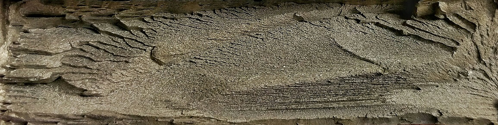
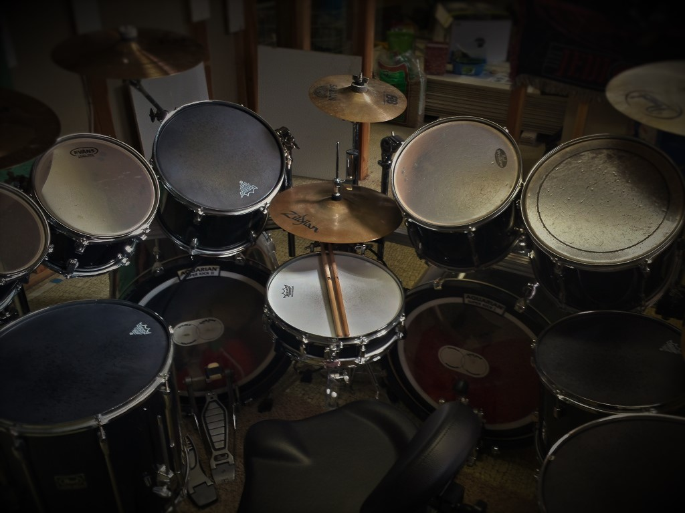
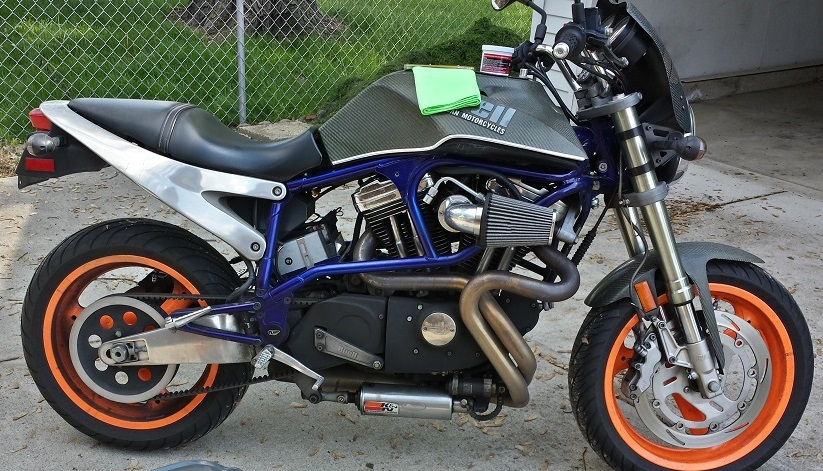

My name is Nathan Blair.
I'm a proud millennial and futurology enthusiast. I hold two Bachelor's degrees in Mechanical Engineering and Materials Science and Engineering. My alma mater is technically Wright State University in Dayton, OH but I attended the University of Cincinnati during my first three years of college and will always consider myself a Bearcat at heart.

My areas of professional experience include steelmaking, steel forming, failure analysis, MEMS, electronic device characterization and fabrication, software development, and swimming pool maintenance. I'm an extremely diverse individual and have a wide array of interests. It stems from the fact that I have an addiction to solving challenging problems and a never-ending desire to learn.

Outside of my professional life I enjoy riding motorcycles. My personal ride is a Limited Edition Carbon Fiber 1999 Buell X1 Lightning. In addition I've always had an incessant knack for percussion instruments, the drum set in particular. At one time in my life I used an assorted 12-piece Pearl and Ludwig set, Paiste cymbals, Evans heads, and a remote hi-hat. Nowadays, I'm saving to invest in a nice new DW set.
 I also have more pets than I know what to do with. My current managerie consists of two dogs (Theo and Nina), a hedgehog (Quill), a bunny (Geddy), and a Cockatiel (Lilo). I am an animal lover and enjoy having so much company!


My personal aspirations are to just be a good person each day, leaving the world a little better than the day before. To accomplish this on a larger scale I am committed to advocating renewable and sustainable energy technology and helping those that live a life less fortunate than I.
I'm interested in talking with people that share my commitment to continuous education, a sustainable world, and open-mindedness. Being millennial lately means being pretty cynical and I won't deny that I am sometimes. But I notice my peers are also very enthusiastic about our potential to shape the world and I'm always looking to have discussions about ways to improve our future. Contact me if you just want to chat about cool things or would like to work on a project with me!